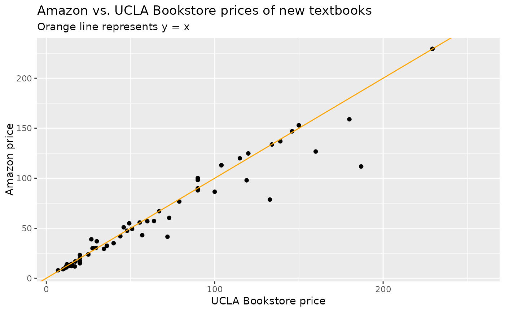

Sample of UCLA course textbooks for Fall 2018
Source:R/data-ucla_textbooks_f18.R
ucla_textbooks_f18.RdA sample of courses were collected from UCLA from Fall 2018, and the corresponding textbook prices were collected from the UCLA bookstore and also from Amazon.
ucla_textbooks_f18Format
A data frame with 201 observations on the following 20 variables.
- year
Year the course was offered
- term
Term the course was offered
- subject
Subject
- subject_abbr
Subject abbreviation, if any
- course
Course name
- course_num
Course number, complete
- course_numeric
Course number, numeric only
- seminar
Boolean for if this is a seminar course.
- ind_study
Boolean for if this is some form of independent study
- apprenticeship
Boolean for if this is an apprenticeship
- internship
Boolean for if this is an internship
- honors_contracts
Boolean for if this is an honors contracts course
- laboratory
Boolean for if this is a lab
- special_topic
Boolean for if this is any of the special types of courses listed
- textbook_isbn
Textbook ISBN
- bookstore_new
New price at the UCLA bookstore
- bookstore_used
Used price at the UCLA bookstore
- amazon_new
New price sold by Amazon
- amazon_used
Used price sold by Amazon
- notes
Any relevant notes
Details
A past data set was collected from UCLA courses in Spring 2010, and Amazon at that time was found to be almost uniformly lower than those of the UCLA bookstore's. Now in 2018, the UCLA bookstore is about even with Amazon on the vast majority of titles, and there is no statistical difference in the sample data.
The most expensive book required for the course was generally used.
The reason why we advocate for using raw amount differences instead of percent differences is that a 20\ to a 20\ price difference on low-priced books would balance numerically (but not in a practical sense) a moderate but important price difference on more expensive books. So while this tends to result in a bit less sensitivity in detecting some effect, we believe the absolute difference compares prices in a more meaningful way.
Used prices contain the shipping cost but do not contain tax. The used prices are a more nuanced comparison, since these are all 3rd party sellers. Amazon is often more a marketplace than a retail site at this point, and many people buy from 3rd party sellers on Amazon now without realizing it. The relationship Amazon has with 3rd party sellers is also challenging. Given the frequently changing dynamics in this space, we don't think any analysis here will be very reliable for long term insights since products from these sellers changes frequently in quantity and price. For this reason, we focus only on new books sold directly by Amazon in our comparison. In a future round of data collection, it may be interesting to explore whether the dynamics have changed in the used market.
Examples
library(ggplot2)
library(dplyr)
ggplot(ucla_textbooks_f18, aes(x = bookstore_new, y = amazon_new)) +
geom_point() +
geom_abline(slope = 1, intercept = 0, color = "orange") +
labs(
x = "UCLA Bookstore price", y = "Amazon price",
title = "Amazon vs. UCLA Bookstore prices of new textbooks",
subtitle = "Orange line represents y = x"
)
#> Warning: Removed 133 rows containing missing values (geom_point).

# The following outliers were double checked for accuracy
ucla_textbooks_f18_with_diff <- ucla_textbooks_f18 %>%
mutate(diff = bookstore_new - amazon_new)
ucla_textbooks_f18_with_diff %>%
filter(diff > 20 | diff < -20)
#> # A tibble: 6 × 21
#> year term subject subject_abbr course course_num course_numeric seminar
#> <dbl> <fct> <fct> <fct> <fct> <fct> <int> <lgl>
#> 1 2018 Fall Film and … FILM TV Introdu… 4 4 FALSE
#> 2 2018 Fall Nursing NA Introdu… 10 10 FALSE
#> 3 2018 Fall English C… ENGCOMP Introdu… 1 1 FALSE
#> 4 2018 Fall Life Scie… LIFESCI Life: C… 15 15 FALSE
#> 5 2018 Fall Nursing NA Pathoph… 54B 54 FALSE
#> 6 2018 Fall Earth, Pl… EPS SCI Introdu… 1 1 FALSE
#> # … with 13 more variables: ind_study <lgl>, apprenticeship <lgl>,
#> # internship <lgl>, honors_contracts <lgl>, laboratory <lgl>,
#> # special_topic <lgl>, textbook_isbn <chr>, bookstore_new <dbl>,
#> # bookstore_used <dbl>, amazon_new <dbl>, amazon_used <dbl>, notes <fct>,
#> # diff <dbl>
# Distribution of price differences
ggplot(ucla_textbooks_f18_with_diff, aes(x = diff)) +
geom_histogram(binwidth = 5)
#> Warning: Removed 133 rows containing non-finite values (stat_bin).
 # t-test of price differences
t.test(ucla_textbooks_f18_with_diff$diff)
#>
#> One Sample t-test
#>
#> data: ucla_textbooks_f18_with_diff$diff
#> t = 2.2012, df = 67, p-value = 0.03117
#> alternative hypothesis: true mean is not equal to 0
#> 95 percent confidence interval:
#> 0.3340641 6.8324064
#> sample estimates:
#> mean of x
#> 3.583235
#>
# t-test of price differences
t.test(ucla_textbooks_f18_with_diff$diff)
#>
#> One Sample t-test
#>
#> data: ucla_textbooks_f18_with_diff$diff
#> t = 2.2012, df = 67, p-value = 0.03117
#> alternative hypothesis: true mean is not equal to 0
#> 95 percent confidence interval:
#> 0.3340641 6.8324064
#> sample estimates:
#> mean of x
#> 3.583235
#>